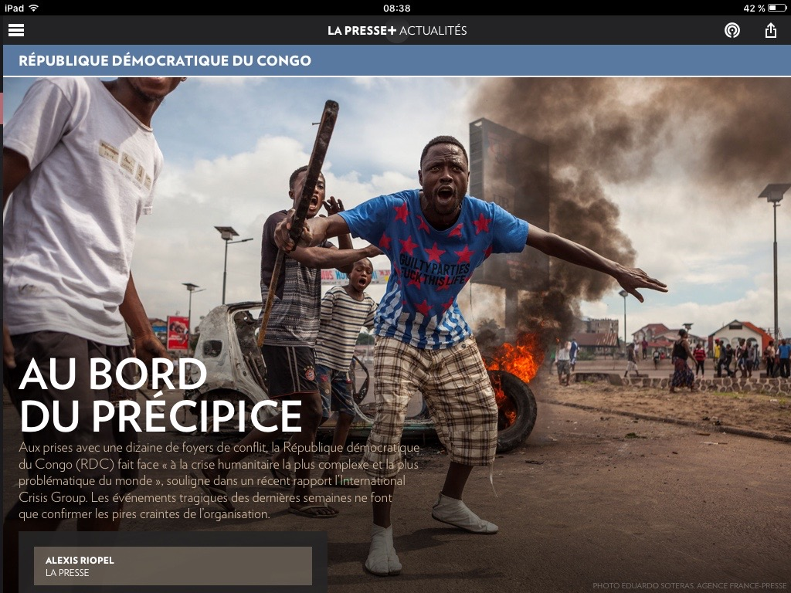

Alexis Riopel
riopelalexis [arobas] gmail.com
Mémoire de maîtrise
Curriculum vitæ
Portfolio
Le Devoir
Québec Science
Le Monde
Radio-Canada
Balados
Livres
Autres
Photos
Pérou, Bolivie et Chili
Nouvelle-Zélande
Odyssée Saint-Laurent
L'actualité — avril 2024
Curium — mai 2024
Courrier international — 24 mars 2022

La Presse+ — 12 mars 2018
La Presse+ — 24 juin 2018
Texte lauréat du concours Fernand-Seguin 2017 — 29 avril 2017